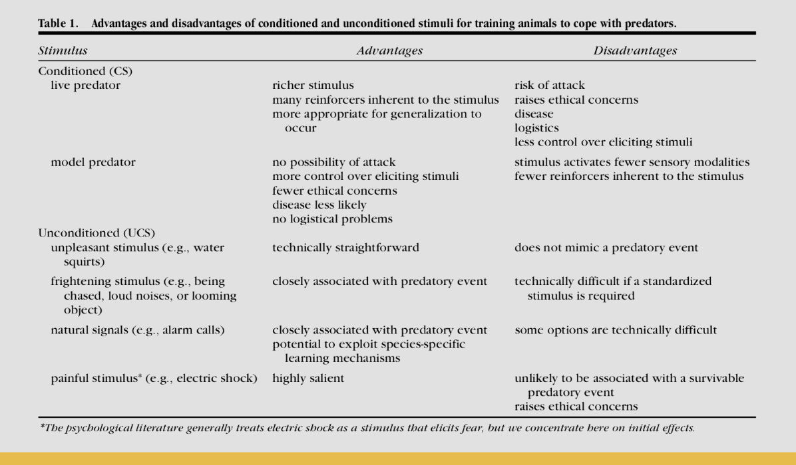
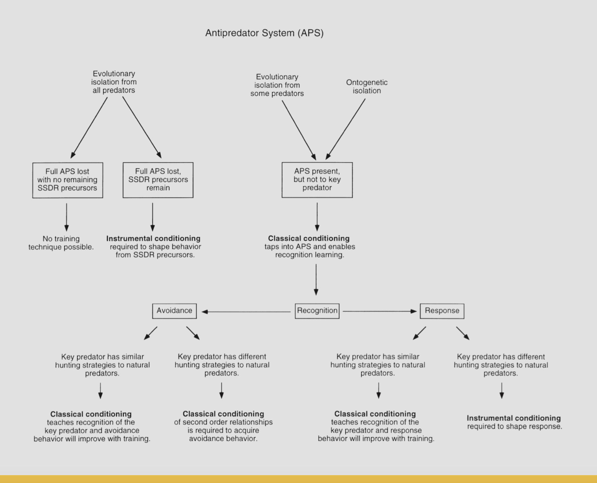
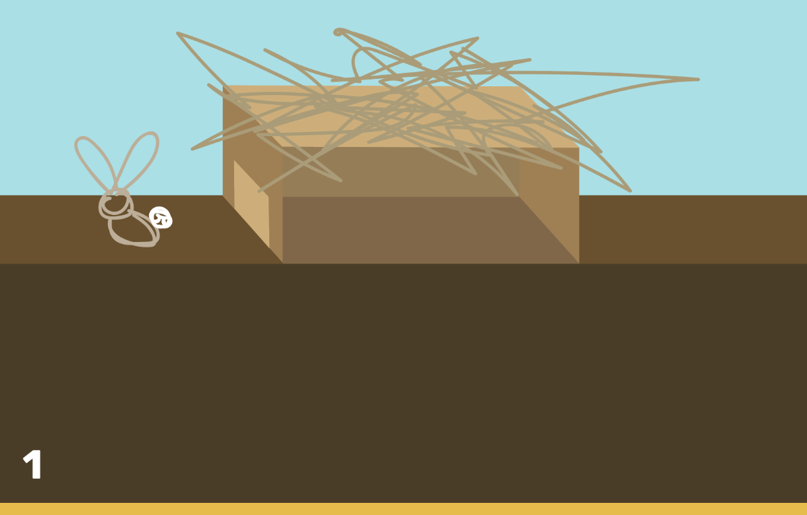
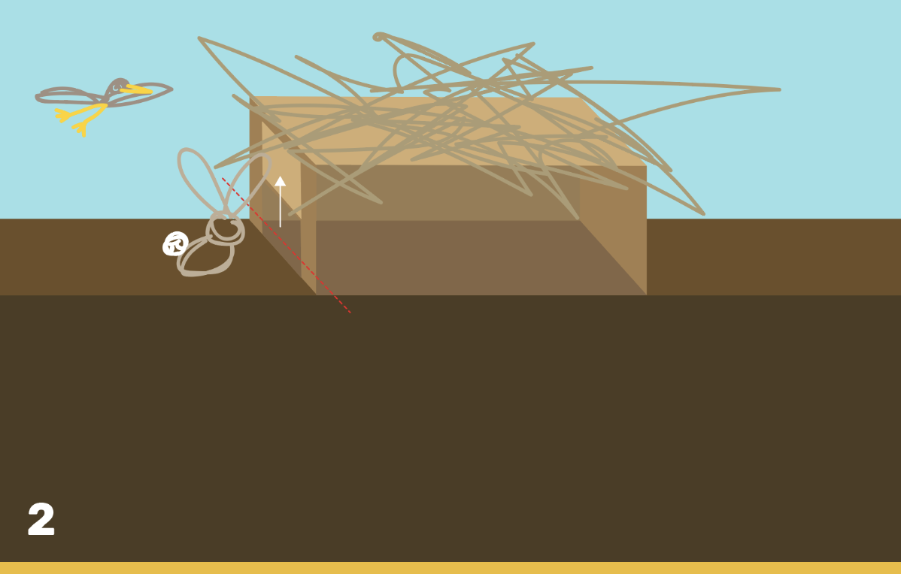
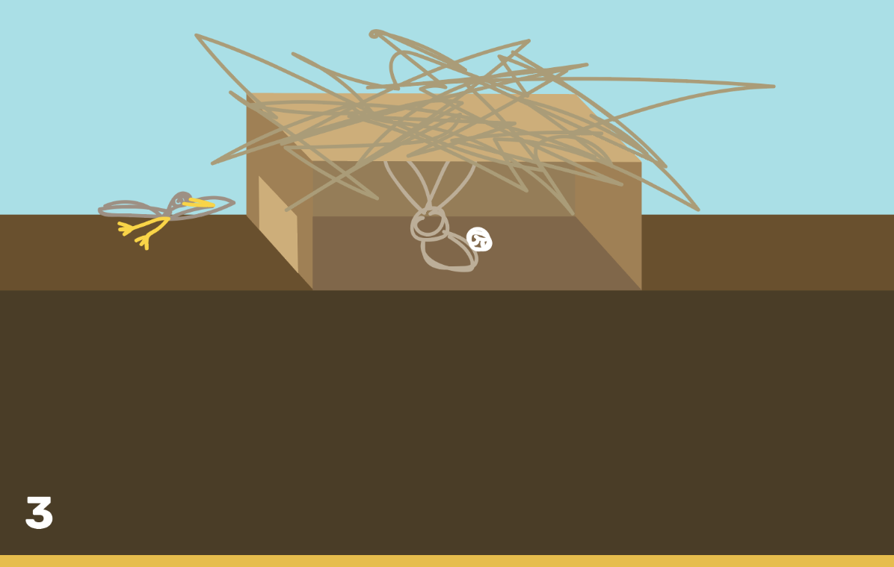
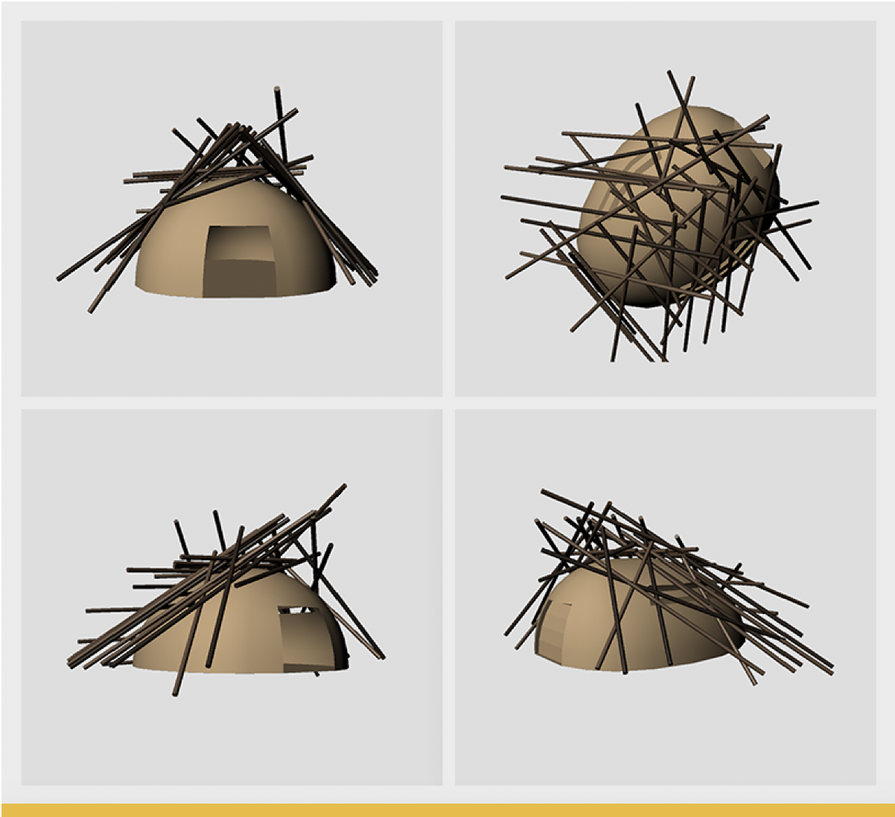

Midterm
This is our midtern final presentation.
New England Cottontail
Captive Breeding Programs: Increasing Survival in Cottontails Reintroduced into the Wild
The New England Cottontail was once abundant in the Northeastern United States. However, it's population has dwindled since 1960 primarily due to human development's impact on the Cottontail's environment in combination with infringement from the only other rabbit species seen in the region today, the Eastern Cottontail. This new species was introduces by hunting organizations and is not native to the region, but due to it's keener eye sight as compared to the New England Cottontail, it survives more predator attacks leaving the New England Cottontail more vulnerable. A serious decrease in thicket habitat has also led to this decline, giving less hiding places to the rabbit and forcing them to travel farther from the hiding places that exist in order to forage for food.
Since 2010, there has been a grand effort by 6 states partnering to increase the New England Cottontail population through captive breeding programs primarily run out of the Roger Williams Zoo in Rhode Island, the Queens Zoo in New York, and organizations out of Maine and New Hampshire. The other states include Massacusetts and Connecticut.
The rabbits were listed on the endangered list until 2015, when it was deemed that the 6-state effort to increase the population with captive breeding and release posed a positive outlook for the species. However, in 2017 in the Department of Inland Fishers (Maine) release effort, most of the 18 New England cottontails brought into the state died primarily due to predation.
Antipredator Response Behavior: Bolting to Low Cover
Unlike some other rabbits, New England Cottontails do not exhibit digging behavior. When in the presence of a detected predator, the Cottontail will sometimes freeze in an attempt to blend in. However, if the predator gets too close, the rabbit will bolt (can run up to 18mph) to a place of cover that is close by such as beneath a hedge, inside a thicket, or underneath a deck like shown in the below video.
However, the primary factor for the decrease in New England Cottontails has been cited as habitat decline. With less secure places like thickets, the rabbits have to travel farther from their safe place to forage. Then, often times they are not close enough to a hiding place to successfully escape when facing a predator. Captive-bred rabbits that are released into the wild face this issue gravely.
Solution: 2 Part Predator Escape Training
 
Design Motivation/Rationale
Per our correspondance with Lou Perotti, Head of Conservation Programs at the Roger Williams Zoo, "We do not do any anti predator training other than allowing the kits time in the outdoor hardening pens. The [New Hampshire] pens do not have tops on them and we have seen predation from birds of prey and weasels."
Part 1: In Captivity (Associating Predator Scent with Danger)
In captivity, the Cottontails will be trained by being presented with the scent of either a fox or a hawk (both will be used at different times) paired with a simulation of the thumping alarm response that rabbits make to communicate danger. Rabbits are able to associate danger with predators through smell as well as the thumping alarm response.
Rabbits will then learn that entering places of cover/hiding will keep them safe from the posed danger.
Part 2: In the Wild (Avoidance vs. Response to Predators)
In the wild, our hiding devices will be placed in various locations in the vicinities that the captive-bred rabbits are released in. The device is designed such that the door will open for the rabbit when it gets close enough but then immediately close when the rabbit crosses over into the space. Once the device detects that the predator has left, the door will open to allow the rabbit out.
Sketch
 
3D Sketch
Impact of Predator Types on Form
The New England Cottontail's most common predators include the red fox, coyote, hawks, and owls. Our design incorporates an opening that is both small (keeps the rabbits safe from foxes and coyotes that won't fit) and ground-level (keeps the rabbits safe from birds of prey that approach from above).
Impact of Natural Hiding Environment on Form
The New England Cottontail's most common hiding spot is a thicket or brush that is low to the ground. Therefore, the hiding device has been designed to resemble a small thicket in its color, organic shape, and the incorporation of stand-in branches. Therefore, if the rabbit can build this association in our training program, it will be able to understand in the wild that this device offers a similar safety to thickets and bushes that they normally hide in.
References
https://newenglandcottontail.org/content/captive-breeding
https://www.edf.org/sites/default/files/8828_New-England-Cottontail-Guide_0.pdf
http://faculty.washington.edu/wirsinga/Griffin2000.pdf
https://www.pressherald.com/2018/10/07/the-bunny-hope/
https://www.rwpzoo.org/about-us/pressroom/media-coverage/record-breaking-year-raising-releasing-rare-rabbits
https://www.ct.gov/deep/cwp/view.asp?a=2723&q=594728
https://newsroom.wcs.org/News-Releases/articleType/ArticleView/articleId/8284/WCSs-Queens-Zoo-is-Part-of-Federal-Six-State-Partnership-to-Save-New-England-Cottontail-Rabbits.aspx
Captive Breeding Leaders/Experts
Lou Perotti, Lperrotti@rwpzoo.org (Head of Conservation Programs at Roger Williams Zoo)
Alexa Duchesneau, alexa_duchesneau@fws.gov (Member of Maine Conservation Corps' Rabbit Effort)
Barbara Russo, brusso@wcs.org (Queens Zoo Breeding Program Contact)
Max Pulsinelli, mpulsinelli@wcs.org (Queens Zoo Breeding Program Contact)